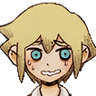
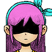
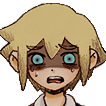
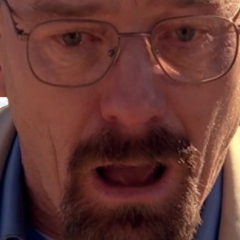
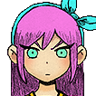
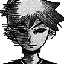
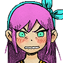

AUTHOR ESTABLISHING CONNECTION. STANDBY...
Oh boy...
You know, this usually doesn't bode well.
Hey, why's that? I'm pretty excited! I wanna see what we end up doing next!
The last time we were excited for something, we all ended up dying very, very gruesome deaths.
...Okay yeah that's true. BUT–
You gotta admit that there has been some cool things we did!
At the cost of being fucked up 50% of the time?
Mmm, yeah but like– it's not like we're actually hurt, though!
It still fucking hurts!
Wow, Aubrey, you of all people are complaining about being hurt in these fics?
Try being me for once.
Or... me for, that matter, haha...!

no comment.
Sunny– that's not even fair. It's literally part of your canon to be fucked up, physically or mentally.
cry about it.
Yeah– I rather not. I've sobbed like a bitch for the past fifty-seven or so chapters of various fics we had to do in the past half a day or so.
Alright, alright you guys. Settle down, let's just see what we have to work with for now.
Okay, grandpa.
I'm only older by three years–
Still a grandpa.
Definitely still a grandpa.
Call me grandma then~


"Extro" HAS CONNECTED.
balls, even.
Oh great it's you.
And I'll tell you why I hate your guts so much.
Aubrey... I, don't think you should, do that...
Aubrey, don't. Please, don't.
Uhhh oooooh...
Aubrey, take a chill pill, alright?
on this episode of "aubrey hates everything"...
Okay, when you started to write stuff, yeah?
I actually respected you a little, just for a second.
You're not out of the woods yet, asshole!
I respected you because your first few fics were actually alright.
Cantobu– whatever the hell Italian word that's supposed to be–
Yes– that. That was alright!
It was like, wholesome and sweet and stuff compared to the usual muck.
warmed my canonically cold heart.
Most of my lines were pretty much ripped straight from the game so...
That made my job a lot easier. Thanks for that!
I mean, you do have a point. It was... pretty heartwarming for a change.
You still shouldn't berate the author like this–
Not finished!
That sibling shit– whatever that was.
That was stupid.
But it was funny.
So it was the "good" stupid.
That was a really fun one, to do, too!
My fingers ached pretty badly halfway through it while I was playing "La Campanella", but it was fun!
I only ever said, a few words or so in that one, but it was, very nice.
I mean... me... going over to their house... with just those two alone... it could've, gone a lot worse, haha...!
A little bit too much trolling–
No, Kel. No.
it was nice.
also
Not funny. Didn't laugh–
anything else?

OKAY! Enough of that. No more stale jokes.
Watermelon one was–
That one was so fun!
I mean, the premise of the whole thing was a little bit dumb–
Like you.
I was gonna get to that!
...
...Alright.
It was very fun! And the plot was like, dumb, but still fun!
But you still stuck to the cliche of me being stupider than I really am.
You are pretty fucking stupid, though.
not that dumb. kinda dumb.
I mean... there is a, level of merit to it... sorry, Kel.
Carrying on!
Okay, those are the fics that are actually alright.
Then everything went fucking downhill from there.
Are you serious?
What the fuck was that waltz shit?
It was... really heartwarming! Until it, wasn't...
Yeah, that one was... interesting, to say the least!
I can still feel the maggots crawling around in my ears and my insides– Extro, you really, really didn't need to add that detail.
seppuku funny.
STOP FUCKING SAYING THAT! THAT'S NOT A VALID EXCUSE!
Besides...
...Huh?
I'm the only real troller here–

Get out.
You can have angst without it being so horrific!
Don't even get me started on that fucking Ohayou shit.
it was my turn to get the pizza.
Some things just run in the family, huh?
ears sufficiently burned.
Your fucking legs were gone!
'tis but a scratch.
Your god damn thigh bones like receded up INTO your guts!
Medically, there shouldn't have been any way for Sunny to survive that.
I'm honestly surprised he didn't just, disintegrate into a–
Fine, red mist!
Kel, no.
...He didn't get any blood on his suit at least.
Oh my god– Basil, not you, too.
I'm sorry! I saw the chance, I had to do it...
...and it's... one of the only references I know, haha...!
Look, I know it was like, technically Omori and whatnot that was at the helm but–
Same brain cell.

im a "buy two for the price of one" offer.
Are you guys finished?
Perhaps.
Like I was saying, I know it was like, technically Omori or whatever but, regardless, it was fucking graphic!
Fuck the people!
Wow, that's pretty classist of you, Aubrey–
Shut the fuck up, will you?
Not to mention my chapter– Jesus fucking, Christ I really hated that.
I was painfully dehydrated after.
My vocal cords were destroyed and I was hoarse for a week after that.
Not to mention, you didn't tell me you were gonna make it that graphic. I was distraught!
I'm just really thankful you stopped before my chapter came.
Being the med student, I already knew you wanted to make me head down there and see Sunny with my own eyes–

But yeah, that's why I loathe you now.
I mean... I kind of like–
Basil, no– don't confirm his beliefs!
But, it's true, though...
I did like... his angst fics a bit...

NO. NO MORE ANGST.
I... I wouldn't, mind–
Basil, please!
more trolling.
A lot more trolling.
catastrophic levels of trolling.
I think I might need a break from that, really.
It doesn't really matter too much to me.
I mean, I've been through everything now, at this point.
Some more interesting than others!
Genderswap was pretty fun, not gonna lie...
I, never objected to–
Something normal, pleeeeease!
head empty. no opinion.
Anything works so long as it's not angst. I'm sorry, I need a break for now.
Like I said before, it really doesn't matter to me too much.
Hmm...
Oh great, look what you did now. You fried his one remaining brain cell.
S-shush for a sec? Tryna think...
...
Oooo~ I got it!
You know, like... what was it called again...? Hellmari?
Oh my goddd- Kel, why?
Oh I'm quite familiar with that.
Okay look– here me out! That... but like, Sunny, too.
based and hellpilled.
And like, oh sure– the whole family!
...
...Why?
Think about it! You can make it funny! It can be like, a comedy!
Yeah, it's actually kind of interesting!
based.
It's an... interesting concept, for sure–
i will look like a spider.
It would be funny teasing Hero while I'm in an eldritch horror form, too.
I think I can, see that being comedic...! I wonder how the whole... argument around the stairs would pan out.
They get into like a massive fight! With fire and dragons and!–
M-maybe minus the, fire and the dragons...
...
...It's not, terrible.
I guess I'm fine with it?
Nightmarish Neighbours
Ah yes, another two word name.
The two word names are getting pretty common with you, yeah.
Maybe something to work on as we go through this series?
short name. based name.
I agree with Sunny, I think a short name like that rolls off the tongue a little better.
Seems fine to me. Just, thankful we're taking a break.
I mean, I don't see anything wrong with it!
You see nothing wrong in anything.
I see through women's wrongs.
That's awfully sexist of you–
Slash J.
...
Did you just say a fucking tone indicator out loud?–
I also see through your classism–
Hoooooly shit– shut up about that!
Later, nerd.
Bye!
Alright, see you.
Adiós, amigo!
Catch ya later!
see ya.
"Extro" HAS DISCONNECTED.
Alright, that's a wrap, guys!
Whew! Man I needa like, go lie down.
i require gamer time.
I think I might be able to tend to my flowers a little bit, now.
Need something to smash to bits.
I might have a chance to bake something, finally!
Well, regardless of what you guys want to do, I think we can all finally take a well-deserved break–
AUTHOR ESTABLISHING CONNECTION. STANDBY...